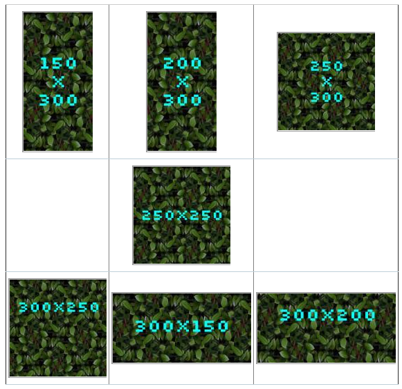

This is done through "chaining" two switches - "is it quite wide or not?", then "is it quite tall or not?" which leaves us with "must be square then."
First we create the three sizes we will be using, small-landscape, small-square, small-portrait. I'll just set those up with scale_and_crop.
We want wide images up to a ratio of 1:0.75 to be rendered wide. We want squarish images, with an aspect between 1:0.75 and 1:1.25 to be rendered square, and anything taller to be rendered tall.
To do this, we chain 2 rules. We need to build them backwards, the smaller sub-rule first, but to understand, I'l list them top down.
Rule 1. is the master rule, 3-aspects
if ratio is less than 1:.75, use small-landscape. If greater, proceed to rule 2.
Rule 2. square-or-portrait
if ratio is less than 1:1.25, use small-square. If greater, use small-portrait.
To do this, we use the aspect switcher to link to the two sizes, and the ratio adjustment to move the switching point a little. Set the ratio adjustment to 1.25
With these (5!) rules in place, you can get the desired effect. This is a little trickier than just making a 'square' setting, but it allows for the required fudge factor to handle almost-square images.
You can nudge the adjustment factor to be looser or tighter. You can create even more chained rules, and define a 'super-wide' size.
| small-landscape | [Scale And Crop] width: 200, height: 100 |
| small-portrait | [Scale And Crop] width: 100, height: 200 |
| small-square | [Scale And Crop] width: 140, height: 140 |
| small-square-or-portrait | [Aspect Switcher] Portrait size: small-portrait. Landscape size: small-square (switch at 1:1.25) |
| small-3-aspects | [Aspect Switcher] Portrait size: small-square-or-portrait. Landscape size: small-landscape (switch at 1:.75) |
The illustration shows the result of this set-up on a collection of images. The listed dimensions are those of the source images. You'll see that the mostly-square ones are rendered square.
The rule being applied is: 1 Is it wide?
For image 250x300, the aspect is ( 250/300 = 0.83 ) Normally that number (less than 1) would be classified as 'portrait', and with the adjustment (*0.75) that is still true, so the processing passes through to the portrait preset.
rule #2 it it tall?
This preset however does a different set of maths, and multiplies the aspect by 1.25, producing a result that causes it to trigger to 'landscape' choice. 'landscape' at this point is set to be the 'square' preset. And we get what we wanted.